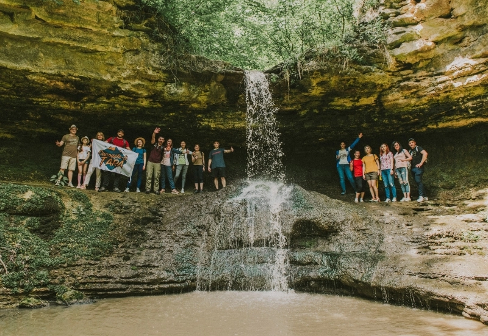

Mănăstirea Căpriana
Un simbol al spiritualității moldovenești, cu o istorie de peste 500 de ani.
Mănăstirea Căpriana este una dintre cele mai vechi și importante mănăstiri din Republica Moldova. Situată în Codrii Lăpușnei, la aproximativ 40 km de Chișinău, aceasta a fost atestată pentru prima dată în anul 1429. A fost susținută de domnitorii Moldovei, inclusiv de Ștefan cel Mare.
Mănăstirea Saharna
Un loc de liniște, rugăciune și natură impresionantă în inima Moldovei.
Mănăstirea Saharna este un complex monastic ortodox amplasat pe malul râului Nistru, în raionul Rezina. Fondată în secolul XVIII, aceasta este renumită atât pentru importanța spirituală, cât și pentru peisajele spectaculoase.
Mănăstirea combină construcțiile religioase clasice cu biserici săpate în stâncă și poteci prin pădure, fiind loc de pelerinaj pentru mii de credincioși.
Mănăstirea Țîpova
O mănăstire rupestră spectaculoasă, săpată în stâncile de pe malul Nistrului.
Mănăstirea Țîpova este una dintre cele mai impresionante mănăstiri rupestre din Europa de Est. Situată pe malul abrupt al râului Nistru, în apropierea satului Țîpova, mănăstirea este săpată în stâncă și oferă o priveliște magnifică.
Tradiția spune că aici s-ar fi retras Ștefan cel Mare și chiar ar fi avut loc căsătoria sa cu Maria Voichița.
Biserica Adormirea Maicii Domnului, Căușeni
O bijuterie a arhitecturii medievale moldovenești și singura biserică pictată în frescă bizantină din Moldova.


Biserica Adormirea Maicii Domnului din Căușeni datează din secolul al XVII-lea și este un monument arhitectural unic în Republica Moldova. Este cunoscută pentru pictura murală în stil bizantin, realizată de pictori români în anul 1763.
Biserica este construită parțial sub nivelul solului, lucru impus de otomani pentru a nu concura vizual cu moscheile.
Este înscrisă în registrul patrimoniului cultural național și atrage anual turiști, istorici și pelerini datorită valorii sale spirituale și artistice.